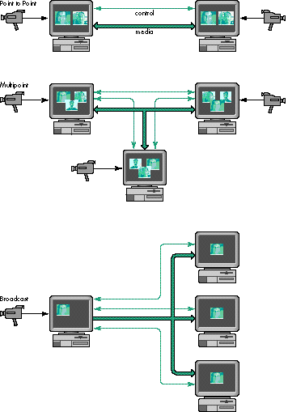
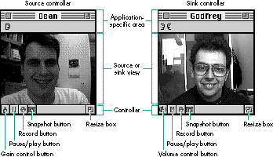
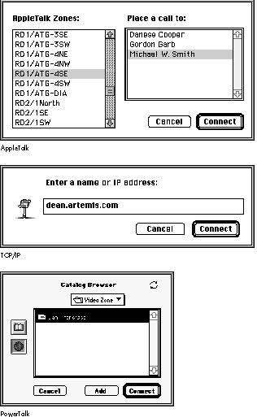
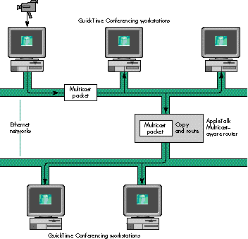
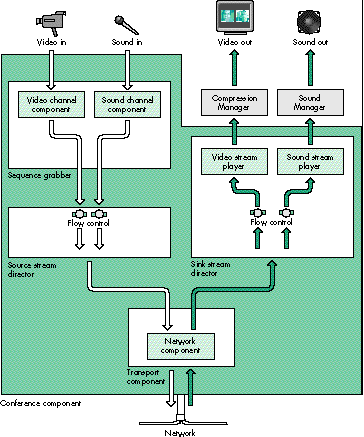
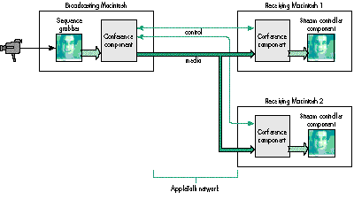

QuickTime Conferencing (QTC) is a new Apple technology that helps
developers add real-time sharing of sound, video, and data to their
applications. This overview suggests the different ways you can
use QTC to help users collaborate. The article describes the
components that most developers will need to use to take
advantage of QTC and discusses Watcher and Caster, two QTC
applications that enable users to tune into network broadcasts and
create broadcasts for others to view.
Video telephones abound in science fiction movies. From Buck Rogers to Star Trek,
visions of the future show people communicating visually over long distances. This
futuristic technology is available to Macintosh developers and users now. QuickTime
Conferencing provides a platform for developers to easily enable users to share sound,
video, and data across a variety of networks.
QTC ships with selected Power Macintosh computers and with some hardware bundles,
and can be licensed by developers to ship with their applications. Apple provides a
basic videoconferencing application, Apple Media Conference (AMC), and developers
are encouraged to create QTC applications that interoperate with AMC and add cool new
collaborative features.
This article will give you background information on the QTC architecture, tell you
about the components that make up that architecture, and then describe in detail the
workings of two simple QTC applications, Watcher and Caster, that enable the user to
watch audio and video and to broadcast them onto a network. This issue's CD contains
the source code for these applications as well as the QTC documentation and the
extension and header files.
QuickTime Conferencing provides a platform for building Macintosh applications that
can send and receive audio, video, and data between computers connected on a network.
QTC supports basic two-way audio communication and a video "telephone" type of
connection, and it supports a wide variety of other models as well. One of the goals of
QTC is to provide developers with a set of tools that make it easy to add real-time
media sharing across a number of different kinds of networks.
This opens up the possibility of adding sound and video to multiuser applications
where it would have been prohibitively difficult before -- and these don't have to be
conventional telephony-style applications. Imagine a flight simulator that allows you
to talk with your fellow squadron members, or a groupware document-markup
application that lets your fellow editors see your expression upon examining the latest
changes. Picture a regional educational system that enables dozens of students to tune
into an 8 A.M. lecture from their dorm rooms across campus or across the state. This
isn't the stuff of science fiction anymore.
QTC uses many of the services provided by QuickTime itself and shares an
architectural basis in the Component Manager. QTC takes advantage of the Image
Compression Manager for video compression and decompression, the sequence grabber
components for capturing media, and the Movie Toolbox for recording movies to disk.
When new features and improvements are added to QuickTime, they often can be used
by QTC immediately. For example, components created for video or sound compression
in QuickTime are automatically available to QTC.
CONFERENCE CONFIGURATIONS
QTC's basic metaphor for real-time media connections is that of a conference.
Conferences are quite flexible and can be configured in a variety of ways. They can
have one, a few, or many members, connected symmetrically or asymmetrically. As
illustrated in Figure 1, connections can take one of three forms: point to point, for
two-way conferences; multipoint, for virtual meetings and groupware applications; or
broadcast, for transmitting from one member to many others.

Figure 1. The three types of conference connections
Members can send or receive sound, video, or data. Media types can be added, removed,
or changed during a conference. Members can join or leave a conference at any time.
Conferences can be merged, and data can be sent to one or all of the conference
members.
Depending on the application, you may want to give users a single configuration --
say, a two-way audio and video connection -- or allow them to modify the conference
configuration themselves. QTC was designed to support a wide variety of conference
configurations and to leave it up to developers to decide which features they need.
Indeed, some applications may need to switch between different configurations within a
single conference. The applications described later in this article each operate in a
single configuration; one can broadcast video and sound to an unlimited number of
recipients and the other can tune into one or more broadcast conferences.
NETWORK, PROTOCOL, AND MEDIA INDEPENDENCE
QTC is network, protocol, and media independent. This means that applications don't
have to know the specifics of a particular network to set up a QTC conference. QTC
1.0.2 ships with support for TCP/IP and AppleTalk networks; third parties and Apple
are working on adding new networks like ISDN, isoEthernet, and ATM to the list. QTC
1.0.2 supports a new media-oriented network protocol, called MovieTalk, but can also
support other media protocols such as the ITU H.320 standard and the emerging
standards used on the Internet Multicast Backbone (MBONE).
The media that flows between conference members is organized into one or more
streams of a particular media type. QTC 1.0.2 supports sound and video streams,
which can be compressed with any sound or video compressor. Future versions of QTC
will be able to support other media types, such as music and text, to parallel the
different track types that can be stored in a QuickTime movie.
THE CONFERENCING EXPERIENCE
QTC provides some of the basic user interface elements called for in a conferencing
application. For example, each member of a conference can be represented on the
screen with a stream controller, in much the same way that a QuickTime movie
controller provides a control representation for a QuickTime movie. In fact, the
stream controller and the movie controller share a similar user interface, so that a
user who has some experience with one can apply that knowledge to the other.
QTC also provides a standard user interface enabling users to choose who to call and
include in a QTC conference, in the form of browser components. Browsers work a bit
like the Standard File Package that allows users to open and save files: they provide a
standard interface for choosing fellow users or searching through PowerTalk catalogs
to find other conference members and place calls to them.
QTC, like much of QuickTime, is built of Component Manager components. Apple
provides a basic suite of components that enable the user to share data and send and
receive compressed video and audio on a few different networks. Before we dive into
our example applications, let's go over some of the component types that make up the
QTC component suite.
There are three main types of QTC components that most developers will need to know
about to add QTC support to their applications: the conference component, the stream
controller component, and the browser component. I'll describe these in some detail.
Developers who want to do fancier things will probably need to know about some of the
other components; the key ones are briefly described later.
Because of the modular architecture of QTC, developers can add, extend, or replace
features and components. For example, a developer who wants to add support for a new
network multimedia protocol can create a new transport component and register it
with the Component Manager. Applications can then find that component and specify its
use in a conference. Developers who want to improve on the QTC stream controller can
capture the standard controller, delegate many of the functions, and replace the ones of
interest.
THE CONFERENCE COMPONENT
The conference component is the key player in a QTC conference. It acts as a central
hub and does the bulk of the work required to orchestrate the comings and goings of the
conference. It's responsible for listening in on the various networks, placing and
answering calls, managing and merging multiple conferences, and more. The
conference component can also provide some higher-level functionality, such as
setting up media capture, handling user events, and even creating and managing
conference windows.
Applications create a conference component instance and let the conference component
do much of the work needed to create, manage, and end conferences. Applications can
then tell the conference component to listen on the networks for incoming calls or to
place a call to another member.
Conference components create conference events when they need to express some
change in a conference to the application. For example, when an incoming call is made
to a conference, the conference component will generate an event of type
mtIncomingCallEvent to notify the application of the call. Applications call the
component routine MTConferenceGetNextEvent periodically to get the events from the
conference component, much as applications call the system routine WaitNextEvent to
get user and system events from the Event Manager.
In response to these conference events, applications work with the conference
component to respond appropriately -- for example, creating a window to display a
new conference member or send messages to other conference members. Details of
working with the conference component will be discussed later when we look at our
sample applications, Watcher and Caster.
THE STREAM CONTROLLER COMPONENT
Stream controllers are responsible for handling the default user interface for
controlling QTC media streams as well as managing their display on the screen and
through the speaker. The conference component is responsible for creating and
managing stream controller components. Applications are passed references to the
stream controllers by the conference component so that they can keep track of where
and how the media is being displayed.
The standard stream controller looks quite a bit like the standard QuickTime movie
controller, with buttons to control the flow of media, resize the visual portion of the
stream, and adjust the sound levels. The stream controller adds some utility buttons
that the movie controller doesn't have: a snapshot button for capturing the current
image displayed in the controller and a record button that provides a standard way for
a user to record the media in a stream controller. (The conference component or the
application is responsible for actually handling the snapshots or recorded movies after
the controller has initiated them.)
Controllers associated with the sending side of a media stream (known as source
controllers) have a slightly different appearance and behavior from those associated
with the receiving side (known as sink controllers), as shown in Figure 2. The source
controller may have a microphone "gain" button that's animated to indicate the level of
the audio being sent across the connection. Users who click this button can adjust the
volume of the sound being sent across the connection. On the receiving end, the sink
controller may display a volume control button that behaves like the speaker button on
the standard movie controller, allowing the user to adjust the volume of the incoming
stream.

Figure 2. Source and sink controller user interfaces
THE BROWSER COMPONENT
To place a call or add another member to a conference, the user needs to specify the
other member to call. Browser components provide a simple way for users to browse
the network and identify other members. Browser components come in two flavors:
network-specific browsers and the PowerTalk browser. The PowerTalk browser and
browsers specific to TCP/IP and AppleTalk are shown in Figure 3.

Figure 3. Browsers
For each different network type -- such as TCP/IP or AppleTalk -- unique browser
components are provided that allow the user to specify a network-specific address. For
example, as shown in Figure 3, the AppleTalk browser presents the user with a
Chooser-style interface whereby the user can choose the zone and then the registered
name within that zone on an AppleTalk network, similar to using the Chooser to pick a
LaserWriter on an AppleTalk network. The TCP/IP browser provides a simple type-in
interface that can accept TCP/IP addresses in numerical or text form.
The PowerTalk browser, on the other hand, is considered a generic or universal
browser, not tied to a particular network or addressing scheme. Users who have
PowerTalk installed can take advantage of the various PowerTalk catalogs and business
cards; these provide an integrated way for users to organize and find other QTC users
in the same way that they access electronic mail addresses via PowerTalk. The
PowerTalk browser allows the user to choose a business card from a PowerTalk catalog
that contains a QTC entry (provided by the QTC PowerTalk Template). This works for
local user catalogs and catalogs provided by PowerShare servers, as well as the
generic AppleTalk network catalog, which allows the user to look out onto the network
and into AppleTalk zones for other users. Users can edit their personal catalogs from
within the Finder, consistent with the standard PowerTalk human interface.
______________________________
Digital video and sound can generate a great deal of data, even when
compressed. Hard disk space is getting to be quite cheap, but network
bandwidth is still an expensive and shared commodity. To keep your fellow
users and network administrators happy, we developed multicast extensions to
AppleTalk that allow a single copy of QuickTime Conferencing media sent out
onto a network to be received and displayed by any number of users.
AppleTalk Multicast consists of a special packet format and a routing protocol
that makes efficient use of the network bandwidth. On a single network
segment, AppleTalk Multicast uses multicast packets that can be received by
anyone on that local network. On an AppleTalk internet, multicast-aware
routers communicate with each other with a new protocol called SMRP, the
Simple Multicast Routing Protocol, as shown in Figure 4. The routers deliver
copies of the media data only to other networks in which there's a user who
wants to receive that data. Networks with no users interested in the broadcast
aren't burdened with the network usage.
Apple has licensed AppleTalk Multicast and the SMRP protocol to Cisco
Systems, Inc. Cisco's router software as of version 11.0 supports this
multimedia protocol.

Figure 4. AppleTalk Multicast routing
______________________________
OTHER QUICKTIME CONFERENCING COMPONENTS
QTC defines and uses many other kinds of components besides the three just mentioned.
Several of these component types may be of interest to developers who want to add
support for new networks or new media protocols; others may be of use to developers
who want to have more control over their conferences. Some of these are listed here.
Several other components are used within QTC, including player components, flow
control components, and others of interest to developers who want to extend QTC to
support new networks, protocols, and media. Figure 5 shows how a number of QTC
components typically work together within the all-encompassing conference
component. For information on all of the components that make up QTC, check out the
QTC documentation on this issue's CD.

Figure 5. How QTC components work together within the conference component
Probably the best way to show how to use QTC in an application is with some examples,
so we've created Watcher and Caster. Watcher lets the user tune into broadcasts on
AppleTalk networks, while Caster enables the user to create broadcasts that can be
watched by others on the AppleTalk network. Watcher and Caster are compatible with
Apple Media Conference (AMC), the QTC application that Apple ships with selected
CPUs and product packages, so you can use Watcher to watch a broadcast that's being
sent by AMC or Caster, and you can use Caster to create broadcasts that can be received
by Watcher and AMC.
Note that in several places in Watcher and Caster, we do some work manually that
otherwise could be done automatically by the conference component. We do this extra
work to demonstrate how you can customize an application if the behavior that you
want is different from the default behavior offered by the conference component.
HOW WATCHER WORKS
Watcher is a relatively simple Macintosh application. After setting up the application
environment, Watcher sets up the conference component that will place calls and
manage the incoming media. Then, within the event loop, the application checks for
user and system events and also checks the conference component for conference
events, which indicate changes in the conference state and may require responses from
the application.
The overall flow of Watcher or any QTC application that uses the conference
component is as follows:
QTCApp()
{
SetupApplication();
SetupConferenceComponent();
StartListening();
do {
ProcessUserEvents();
ProcessConferenceEvents();
} while (!gQuit);
CleanUpConferenceComponent();
CleanUpApplication();
ExitToShell();
}
Below, I'll go into more detail about the three major application responsibilities --
setting up the conference component, handling conference events, and cleaning up at
the end of the conference -- showing the core routines that deal directly with the
conference component. Check out the full source code to see them in the context of the
entire application.
SETTING UP A CONFERENCE
Listing 1 shows how the conference component is created and initially configured. The
Component Manager call OpenDefaultComponent is used to create and open an instance
of the conference component; then the conference component mode is set to indicate that
the conference will be used to receive media. Finally, the component is told what
networks to prepare for connections on -- AppleTalk in this case -- and how to
identify itself on that network.
MTConferenceListen (as well as MTBrowserBrowse, a call we'll encounter a little
later) uses a C string of type MTCString to describe the network and transport
configurations. In Listing 1, the string "mtlkatlk\tNoIncomingCalls\x0D" indicates
that the conference component should listen for calls that have a transport subtype of
'mtlk' (the component subtype for the MovieTalk transport component) and a network
subtype of 'atlk' (the subtype for AppleTalk networks). The "\t" delimits the subtypes
from the network-specific configuration data that follows. For AppleTalk networks,
this is the Name Binding Protocol (NBP) type "No Incoming Calls." Finally, the
configuration is terminated with a carriage return ("\x0D"). You can string together
multiple configuration strings (each terminated with a carriage return) to listen in
on multiple networks for calls. Check out the full documentation for a more complete
explanation of the configuration strings.
Listing 1. CreateWatchConference
ComponentResult CreateWatchConference(MTCString63 userName)
{
ComponentResult err;
/* Create a conference record. */
err = NewConference(&gConference);
if (err == noErr) {
gConference->confComponent
= OpenDefaultComponent(kMTConferenceType,
kMTMovieTalkSubType);
if (gConference->confComponent) {
/* Tell the conference component that we only want to */
/* receive media, not send. */
err = MTConferenceSetMode(gConference->confComponent,
mtReceiveMediaModeMask);
/* Tell the conference component to prepare to use
AppleTalk.
The funky C string tells the conference component:
mtlk = use the MovieTalk transport component
atlk = use the AppleTalk network component
NoIncomingCalls = the AppleTalk-specific NBP type
that's used for listening;
i.e., there will be no incoming calls
*/
if (err == noErr)
err = MTConferenceListen(gConference->confComponent,
userName /* User name */,
userName /* Service name */,
(MTCString)"mtlkatlk\tNoIncomingCalls\x0D");
}
else
err = couldntGetRequiredComponent;
}
return err;
}
BROWSING THE NETWORK
Now that the conference is set up, we can place a "call" out onto the network to the
broadcaster that the user wants to watch. We'll use the AppleTalk browser component
to pick a registered broadcaster.
The BrowseName routine (Listing 2) opens the browser component and uses the
MTBrowserBrowse component call to specify which kind of network entity to look for.
In this case it's a MovieTalk entity registered on an AppleTalk network with the NBP
type of "Multicaster"; this type identifies broadcasts from Caster and AMC.
MTBrowserBrowse then presents users with the browser dialog, where they can
"surf" the network and find the appropriate broadcaster. Some browsers (like the
PowerTalk browser) can return multiple names in an MTNameList. We're only
interested in the one AppleTalk broadcast picked by the user, so we pick off the first
MTName from the MTNameList.
Listing 2. BrowseName
ComponentResult BrowseName(MTNamePtr name)
{
MTNameListPtr allNames = 0;
ComponentResult err;
MTBrowserComponent browser = nil;
browser = OpenDefaultComponent(kMTBrowserType,
kMTAppleTalkSubType);
if (browser) {
err = MTBrowserBrowse(browser, 0, nil,
(MTCString)"mtlkatlk\tMulticaster\x0D", 0, &allNames);
CloseComponent(browser);
}
else
err = couldntGetRequiredComponent;
if ((allNames != 0) && (err == noErr)) {
/* Copy the first name record; that's all we're interested */
/* in. */
*name = allNames->list[0];
/* Dispose of the list of names. */
DisposePtr((Ptr)allNames);
}
return err;
}
TUNING IN
CallMember (Listing 3) is the code needed to tell the conference component to place a
call to the broadcaster. The calling routine passes in the MTName (obtained from
BrowseName) and a pointer to the window in which the broadcast is to appear (and that
window's size). The resize parameter will be used later to determine whether to resize
the window automatically to the dimensions of the video being broadcast. CallMember
returns a pointer to a new MemberRecord data structure, where the information about
each broadcast-watching window is kept. The important conference component call
here is MTConferenceCall, which is passed a reference to the conference component, an
arbitrary name for the conference, and the MTName describing the party whose
broadcast we want to watch.
Note that the conference component manages each independent connection to a
broadcaster as a unique conference. That's just fine for our application, since the
broadcast windows are really independent. In multiparty connections, however,
conferences can be joined and then individual members can belong to the same
conference. In that case the conference name parameter in MTConferenceCall
("Watcher" in Listing 3) may have more meaning and may be used to distinguish
independent conferences. In our case, we give them all the same name.
Listing 3. CallMember
ComponentResult CallMember(MTName* name, WindowPtr wind, Rect* box,
Boolean resize, MemberRecord** member)
{
MemberRecord* mr;
ComponentResult err;
/* Create a new member record. */
err = NewMember(&mr);
if (err == noErr) {
mr->member = MTConferenceCall(gConference->confComponent,
(MTCString)"Watcher", name);
mr->box = *box;
mr->window = wind;
mr->resize = resize;
if (member)
*member = mr;
}
return err;
}
TURNING ON
Now that the conference call has been placed, we need to check the conference
component periodically to find out about changes in the conference. Listing 4 shows the
routine CheckConferenceEvents, which is intended to be called within the main event
loop of the application. Each time through the loop, we call MTConferenceGetNextEvent.
Most of the time this will return false, indicating that there are no new events. When
some state in the conference has changed, it will return true, and we should then parse
the event (with HandleConferenceEvent) to see what the correct response is.
Listing 4. CheckConferenceEvents
ComponentResult CheckConferenceEvents(void)
{
MTConferenceEvent confEvent;
ComponentResult err;
if (MTConferenceGetNextEvent(gConference->confComponent,
&confEvent))
err = HandleConferenceEvent(&confEvent);
return err;
}
The MTConferenceEvent data structure, also known as an event record, has several
fields that we'll use in the following listings. The what field indicates the type of
event; depending on this, HandleConferenceEvent (Listing 5) switches to the individual
subroutines corresponding to each event. The surprise field, if not set to 0, contains
a handle to data that's associated with the event and needs to be disposed of after use.
The other fields, who, err, and bonus, contain references to the members, error
codes, and event-specific data, respectively. See the documentation for details on the
meanings of these fields for all event types.
Listing 5. HandleConferenceEvent
ComponentResult HandleConferenceEvent(MTConferenceEventPtr confEvent)
{
ComponentResult err = noErr;
/* Like a user event handler, we switch on the different
conference events. */
switch (confEvent->what) {
case mtConferenceReadyEvent:
err = DoConfReady(confEvent);
break;
case mtMemberReadyEvent:
err = DoMemberReady(confEvent);
break;
case mtMemberTerminatedEvent:
err = DoMemberTerminated(confEvent);
break;
case mtMemberJoiningEvent:
err = DoMemberJoining(confEvent);
break;
case mtPhoneRingingEvent:
err = DoPhoneRinging(confEvent);
break;
case mtRefusedEvent:
case mtFailedEvent:
err = confEvent->err;
break;
default: /* Ignore all others. */
break;
}
/* If there's data associated with this event, free it. */
if (confEvent->surprise)
DisposeHandle(confEvent->surprise);
return err;
}
After a call has been placed and a connection has been established with the remote side,
an event of type mtMemberJoiningEvent is returned by the conference component.
Upon receiving this event our application calls DoMemberJoining (Listing 6) and
simply makes a record of this new member and adds it to our list of members. The
conference component will continue to establish the connection and will notify us
further when the connection has been completely brought up.
Listing 6. DoMemberJoining
struct MemberRecord {
MTControllerComponent controller;
MTDirectorComponent director;
MTConferenceMember member;
WindowPtr window;
Boolean resize;
Rect box;
MemberRecord* next;
};
...
ComponentResult DoMemberJoining(MTConferenceEventPtr confEvent)
{
MemberRecord* currMember;
ComponentResult err = noErr;
err = NewMember(&currMember);
if (err != noErr) {
currMember->member = confEvent->who;
AddMember(gConference, currMember);
}
return err;
}
Once the connection has been fully established, the conference component sends us an
event of type mtMemberReadyEvent. Now we have a little more work to do. In this case,
the application needs to create a controller and place that controller into a window for
incoming media to be displayed. The conference component can do much of this work for
you, including creating a controller (and its associated stream director) as well as
creating a window and even handling user events for that window, with the
MTConferenceNewPreparedController call. For many applications this method is
perfectly adequate, but if you need more control over event handling and window
management in your application, you'll want to do this work manually, as we do in
Watcher and Caster. Use of MTConferenceNewPreparedController is demonstrated in
the SeeWorld sample applications included on this issue's CD; check out the Rogues and
Guardian examples in particular.
DoMemberReady (Listing 7) first checks to see if we can expect media to be sent by
the new member. (If the member isn't sending media, there's no point in setting up a
window.) If the member is sending media, we create a controller component and a
stream director component, which are responsible for displaying the media data. After
this, we call MTControllerNewAttachedController to connect the controller to the
stream director and point it at a window for display. We then do one more thing to the
controller before activating it in the conference: we set an action filter for it. The
action filter is a callback routine that the controller calls whenever any important
action happens within the controller. In our application, the only action that we care
about is the resizing of the media data so that we can resize the window. The action
filter routine is shown in Listing 8.
Listing 7. DoMemberReady
ComponentResult DoMemberReady(MTConferenceEventPtr confEvent)
{
ComponentResult err = noErr;
MemberRecord* currMember;
Point where = {0, 0};
Boolean aTrue = true;
if (confEvent->bonus & mtReceiveMediaModeMask) {
currMember = FindMember(gConference, confEvent->who);
if (currMember == nil)
return noErr;
currMember->controller =
OpenDefaultComponent(kMTControllerType,
kMTMovieTalkSubType);
if (currMember->controller == 0)
err = couldntGetRequiredComponent;
if (err == noErr) {
currMember->director = OpenDefaultComponent(
kMTSinkStreamDirectorType, kMTPlayerType);
if (currMember->director == 0)
err = couldntGetRequiredComponent;
}
if (err == noErr)
err = MTControllerNewAttachedController(
currMember->controller, currMember->director,
currMember->window, where);
if (err == noErr)
err = MTControllerSetActionFilter(currMember->controller,
actionFilterUPP, (long)currMember);
if (err == noErr)
err = MTConferenceActivateMember(gConference->confComponent,
confEvent->who, currMember->controller);
if (err == noErr)
err = MTControllerDoAction(currMember->controller,
mtControllerActionPlay, &aTrue);
}
return err;
}
Listing 8. MyControllerActionFilter
pascal Boolean MyControllerActionFilter(MTControllerComponent mtc,
MTControllerActionType action,
void* params, long refCon)
{
void* unused1 = params;
long unused2 = refCon;
RgnHandle controllerRgn;
Boolean handled = false;
Rect box;
WindowPtr controllerWindow =
(WindowPtr)MTControllerGetControllerPort(mtc);
switch (action) {
case mtControllerActionControllerSizeChanged:
/* Find out how big the controller is. */
controllerRgn = MTControllerGetWindowRgn(mtc,
controllerWindow);
/* Resize the window accordingly. */
if (controllerRgn != nil) {
box = (**controllerRgn).rgnBBox;
DisposeRgn(controllerRgn);
SizeWindow(controllerWindow, box.right, box.bottom,
true);
}
break;
default:
break;
}
return handled;
}
Finally, DoMemberReady calls MTConferenceActivateMember to activate the member,
and we pass MTConferenceActivateMember the newly created controller. Before
exiting, we call MTControllerDoAction to tell the controller component to begin
playing the incoming media as soon as it begins. (Controllers are by default in a paused
state when they're created.)
DROPPING OUT
When the user has decided to close down the reception of the broadcast (say, by closing
a broadcast window), the application calls CloseWatch (Listing 9). CloseWatch will
find the member record corresponding to the conference member and obtain the
conference token associated with that member. (Remember, each member is part of a
unique conference, so the member has both a conference token and a unique
ConferenceMember identifier.) Then we begin to terminate the conference by calling
MTConferenceTerminate.
Listing 9. CloseWatch
ComponentResult CloseWatch(WindowPtr window)
{
ComponentResult err = noErr;
MTConferenceToken theConference;
MemberRecord* theMember;
theMember = FindMemberWindow(gConference, window);
if (theMember == nil)
err = paramErr;
if (err == noErr) {
theConference = MTConferenceGetMemberConference(
gConference->confComponent,
theMember->member);
err = MTConferenceTerminate(gConference->confComponent,
theConference);
}
return err;
}
The conference isn't completely terminated until we receive an event of type
mtMemberTerminatedEvent, which is handled by DoMemberTerminated (Listing 10).
DoMemberTerminated is called when the conference connection for this member has
been completely terminated, either by an MTConferenceTerminate call or by the
remote side closing down. In response, we'll close down the controller and stream
director components and the associated window, then free up our application's
MemberRecord for this member.
Listing 10. DoMemberTerminated
ComponentResult DoMemberTerminated(MTConferenceEventPtr confEvent)
{
MemberRecord* member;
ComponentResult err;
member = FindMember(gConference, confEvent->who);
if (member == nil)
return noErr;
RemoveMember(gConference, member);
if (member->controller)
CloseComponent(member->controller);
if (member->director)
CloseComponent(member->director);
if (member->window)
CloseWindow(member->window);
err = DisposeMemberRecord(member);
return err;
}
That's it for the key QTC routines in Watcher. Check out the source code on the CD to
see the entire package come together.
Caster, the broadcasting side of this networked multimedia system, is similar to
Watcher in many ways. It uses a conference component (see Figure 6) and processes
conference events, but it handles the other side of the conference establishment:
setting up and transmitting media and accepting incoming calls. In some ways, Caster
is simpler: since it broadcasts to anybody who wants to tune in, it doesn't need to keep
track of each member individually.

Figure 6. A QTC broadcaster and two watchers
SETTING UP THE SEQUENCE GRABBER
Probably the trickiest part of Caster is the code that sets up the sequence grabber to
capture video and sound. The call MTConferenceNewPreparedController from the
conference component could be used to set up the sequence grabber (as well as the
controller and stream director) in many cases, but as mentioned earlier for Watcher,
this call won't be adequate if you need more control.
In the SetupSequenceGrabber routine (Listing 11), we first create the sequence
grabber component by calling OpenDefaultComponent. Once the component is initialized
with SGInitialize, we create the individual sound and video channels. We can use other
calls in the sequence grabber component API to adjust settings, like frame rate and
compressor type. We also need to call SGSetChannelUsage to tell the controller that the
channels can be used for preview and record and that they will play through during
recording (seqGrabPreview + seqGrabRecord + seqGrabPlayDuringRecord).
Listing 11. SetupSequenceGrabber
ComponentResult SetupSequenceGrabber(
SeqGrabComponent* sg, SGChannel* soundChannel,
SGChannel* videoChannel)
{
ComponentResult err = noErr;
SeqGrabComponent grabber = nil;
*soundChannel = nil;
*videoChannel = nil;
grabber = OpenDefaultComponent(SeqGrabComponentType, 0);
if (grabber == nil)
err = couldntGetRequiredComponent;
else {
err = SGInitialize(grabber);
if (err == noErr) {
err = SGNewChannel(grabber, SoundMediaType, soundChannel);
if (err == noErr)
SGSetChannelUsage(*soundChannel,
seqGrabPreview + seqGrabRecord);
err = SGNewChannel(grabber, VideoMediaType, videoChannel);
if (err == noErr) {
SGSetFrameRate(*videoChannel, 0);
/* 'rpza' is the Apple Video Compressor. */
SGSetVideoCompressorType(*videoChannel, 'rpza');
SGSetChannelUsage(*videoChannel,
seqGrabPreview + seqGrabRecord
+ seqGrabPlayDuringRecord);
}
/* Reset in case we had a problem opening a channel */
/* (e.g., there was no digitizer). */
err = noErr;
}
}
if (err != noErr) {
if (grabber)
CloseComponent(grabber);
grabber = nil;
}
*sg = grabber;
return err;
}
ATTACHING THE SEQUENCE GRABBER
Now that we have the sequence grabber created as a source for captured data, we need
to hook it up to the stream director and controller and create a pipeline for the media,
which will eventually be fed into the conference component and out onto the network.
OpenCast (Listing 12) takes a sequence grabber and a window to display it in, creates a
source stream director and controller, and configures them.
Listing 12. OpenCast
typedef struct {
WindowPtr window;
SeqGrabComponent sg;
MTConferenceComponent confComponent;
MTControllerComponent controller;
MTDirectorComponent director;
Boolean casting;
MTConferenceToken conference;
} CastRecord;
...
ComponentResult OpenCast(WindowPtr window, SeqGrabComponent sg,
CastRecord** cr)
{
ComponentResult err = noErr;
CastRecord* newRecord = nil;
Point origin = {0,0};
/* Specify the default window bounds for a 160-by-120 video window;
add 16 to the height
to make space for the controller. */
Rect bounds = {0, 0, 120 + 16, 160};
Boolean aFalse = false;
newRecord = (CastRecord*)NewPtrClear(sizeof(CastRecord));
if (newRecord == nil)
err = MemError();
if (err == noErr) {
newRecord->window = window;
newRecord->sg = sg;
newRecord->director =
OpenDefaultComponent(kMTSourceStreamDirectorType, kMTGrabberSubType);
if (newRecord->director == nil)
err = couldntGetRequiredComponent;
}
if (err == noErr) {
newRecord->controller = OpenDefaultComponent(kMTControllerType,
kMTMovieTalkSubType);
if (newRecord->controller == nil)
err = couldntGetRequiredComponent;
}
if (err == noErr)
err = MTControllerSetActionFilter(newRecord->controller,
actionFilterUPP, 0);
if (err == noErr)
err = MTDirectorSetMediaComponent(newRecord->director, sg);
if (err == noErr)
err = MTControllerNewAttachedController(newRecord->controller,
newRecord->director, window,
origin);
if (err == noErr)
err = MTControllerDoAction(newRecord->controller,
mtControllerActionSetShowSnapshot, &aFalse);
if (err == noErr)
err = MTControllerSetControllerBoundsRect(newRecord->controller,
&bounds);
if (err == noErr)
*cr = newRecord;
else
CloseCast(newRecord);
return err;
}
After the source stream director and controller are created, we attach a controller
action filter routine (as we did before for Watcher) and connect the sequence grabber
to the stream director with the MTDirectorSetMediaComponent call. The value of the
source stream director subtype is the same as the value of the sequence grabber type,
indicating that this source stream director has a sequence grabber as its source. We
then call MTControllerNewAttachedController to attach the controller to the stream
director; MTControllerDoAction with mtControllerActionSetShowSnapshot, passing in
false to hide the snapshot button (not the default behavior); and finally
MTControllerSetControllerBoundsRect to give the controller an initial bounds size.
STARTING TO BROADCAST
Now that we're ready to start broadcasting, we'll create the conference component and
have it start listening for incoming calls from watchers, as shown in Listing 13.
MTConferenceSetMode indicates to the controller that we'll want to send media (which
we didn't want to do with Watcher) and that we expect to share a single
director/controller source with multiple members of a conference. We won't actually
attach the controller/director/sequence grabber chain to the conference component
until somebody calls in.
Listing 13. StartCasting
ComponentResult StartCasting(CastRecord* cr, Str63 name)
{
MTCString63 cName;
ComponentResult err = noErr;
PToCString(name, cName);
cr->confComponent =
OpenDefaultComponent(kMTConferenceType, kMTMovieTalkSubType);
if (cr->confComponent == nil)
err = couldntGetRequiredComponent;
if (err == noErr)
err = MTConferenceSetMode(cr->confComponent,
mtSendMediaModeMask + mtShareableModeMask);
if (err == noErr)
err = MTConferenceListen(cr->confComponent, cName, cName,
(MTCString)"mtlkatlk\tMulticaster\x0D");
if (err == noErr)
cr->casting = true;
return err;
}
Finally, we begin listening with the call to MTConferenceListen, passing it the C string
indicating the transport, network, and configuration information. In this case the
transport type is 'mtlk' for the MovieTalk protocol transport component, the network
type is 'atlk' for AppleTalk, and the configuration string is "Multicaster"; the latter
will be used by AppleTalk as an NBP type. This is the AppleTalk NBP type that the
browser in Watcher looked for while browsing the network. (This is also the type that
AMC uses, so we'll be able to watch Caster broadcasts with it, too.)
ANSWERING THE CALLS WHEN THEY COME IN
Once the conference component has been set up, Caster periodically checks it for
conference events, just as Watcher does. Some of the behavior in response to these
events is a little different, mainly because Caster is receiving incoming calls and
sending media. Listing 14 shows the routines that get called in response to the
following conference events: mtIncomingCallEvent, mtConferenceReadyEvent,
mtMemberReadyEvent, and mtConferenceTerminatedEvent.
Listing 14. Routines for responding to conference events
ComponentResult DoIncomingCall(CastRecord* cr,
MTConferenceEventPtr confEvent)
{
return MTConferenceReply(cr->confComponent, confEvent->who, 0);
}
ComponentResult DoConferenceReady(CastRecord* cr,
MTConferenceEventPtr confEvent)
{
ComponentResult err = noErr;
if (cr->conference == 0) {
cr->conference = confEvent->who;
err = MTConferenceActivateConference(cr->confComponent,
cr->conference, cr->controller);
}
else
err = MTConferenceMerge(cr->confComponent, cr->conference,
confEvent->who);
return err;
}
ComponentResult DoMemberReady(CastRecord* cr,
MTConferenceEventPtr confEvent)
{
ComponentResult err = noErr;
err = MTConferenceActivateMember(cr->confComponent,
confEvent->who, 0);
if (err == noErr)
err = MTConferenceDetachMember(cr->confComponent,
confEvent->who);
return err;
}
ComponentResult DoConferenceTerminated(CastRecord* cr,
MTConferenceEventPtr confEvent)
{
ComponentResult err = noErr;
if (cr->conference == confEvent->who) {
cr->conference = 0;
MTControllerDoAction(cr->controller, mtControllerActionPlay,
&aTrue);
}
return err;
}
In response to an mtIncomingCallEvent, the DoIncomingCall routine simply invokes the
conference component's MTConferenceReply function to essentially answer the call
immediately. A more complex version of this routine might check the caller's identity
to determine whether the caller has permission to watch the broadcast. Caster will
take all callers and reply immediately.
Upon receipt of the mtConferenceReadyEvent, passed when the conference has been
fully established, we'll take one of two courses of action:
Now that the conference is set up, we should expect to receive an event of type
mtMemberReadyEvent. Here we simply activate the member to start receiving the
broadcast. Then we call a special function designed to help us take advantage of
multicast network services if available, MTConferenceDetachMember. This function
will "detach" the member from a direct point-to-point connection and will rely on
multicast services to get the member its data. In this case the receiving side and Caster
can't send reliable messages to each other, but for our application that's just fine; we'd
rather minimize the network traffic.
Finally, when a watcher disconnects, for whatever reason, we're notified with an
mtConferenceTerminatedEvent and call DoConferenceTerminated. If this is the first
conference, we forget about it by resetting our conference token to 0. (We also get
termination events for conferences that were merged, so we just ignore those.) When
the connection is torn down the media is stopped by the stream director, so to continue
the preview for the user we tell the controller to start playing again with the
MTControllerDoAction function.
ADJUSTING THE PICTURE
Typically, developers want to enable users to change media settings of the sequence
grabber when it's connected to the other components and even when we're sending to a
conference. In Listing 15, we use the sequence grabber SGSettingsDialog function to
present users with a configuration dialog so that they can change the video or audio
settings. It's not really safe to talk to the sequence grabber directly without warning
the other parts of the connection that the media formats will change.
Listing 15. CastChannelSettings
ComponentResult CastChannelSettings(CastRecord* cr,
SGChannel channel)
{
ComponentResult err = noErr;
err = MTControllerChangedStreams(cr->controller, false);
if (err == noErr) {
err = SGSettingsDialog(cr->sg, channel, 0, nil, 0, nil, nil);
MTControllerChangedStreams(cr->controller, true);
}
return err;
}
We surround the call to SGSettingsDialog with calls to the controller function
MTControllerChangedStreams. The second parameter is a Boolean that indicates
whether we've finished changing the streams. Calling MTControllerChangedStreams
with this parameter set to false pauses the media in the connection and makes it safe to
change the setting. Then after the sequence grabber has been adjusted, we call
MTControllerChangedStreams again with this parameter set to true to indicate that
we're done. This in turn starts the process of "renegotiating" the media formats across
the connection safely.
There's a wealth of documentation available to help you add QTC support to your new
and existing applications.
Inside Macintosh: QuickTime Conferencing can be found on this issue's CD, documenting
the API for all of the QTC components as well as the MovieTalk protocol. The rest of the
QTC documentation, including more sample code, human interface notes, and
documentation on AppleTalk Multicast, can be found on the Mac OS SDK edition of the
Developer CD Series. To learn about the intricacies of the sequence grabber and other
media- and component-related topics, check out Inside Macintosh: QuickTime and
Inside Macintosh: QuickTime Components.
Come visit us on the World Wide Web at http://qtc.quicktime.apple.com/; you'll find
abundant QTC information there, including developer documentation and free software.
To share your ideas about uses for QTC, you can reach the QTC team at
movietalk@applelink.apple.com (AppleLink MOVIETALK). To get the licensing terms
for QTC, contact Apple's Software Licensing department at
sw.license@applelink.apple.com (AppleLink SW.LICENSE) or (512)919-2645, or
write to Apple Computer, Inc., 2420 Ridgepoint Drive, M/S 198-SWL, Austin, TX
78754.
I hope that I've been able to give you an idea of what QuickTime Conferencing is all
about and how to get started using this exciting new technology. No longer just the stuff
of science fiction, videophone and other multimedia connections can be part of the
Macintosh experience for everyone.
Thanks to our technical reviewers Eric Carlson, Brian Cox, Godfrey DiGiorgi, Kevin
Gong, Eric Hoffert, and Guy Riddle.
DEAN BLACKKETTER (dean@artemis.com) used to work for Apple in the Advanced
Technology Group. He now has a gig with Artemis Research working on "the next big
thing." He plays in San Francisco with his wife, their cat, and the scary elf who lives
on top of the fridge.